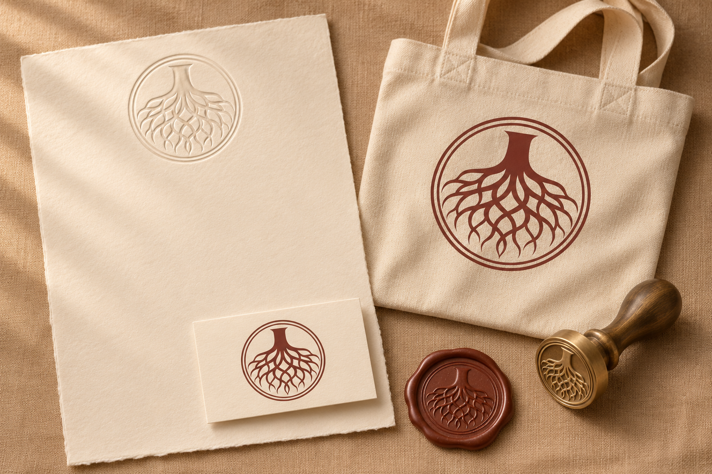
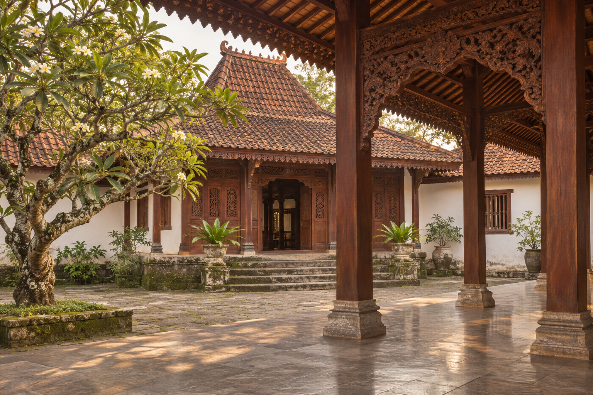
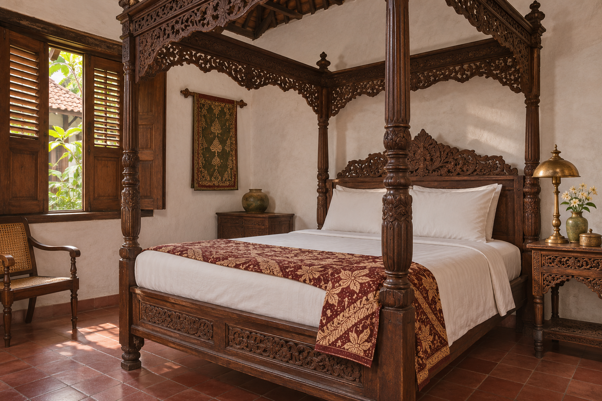
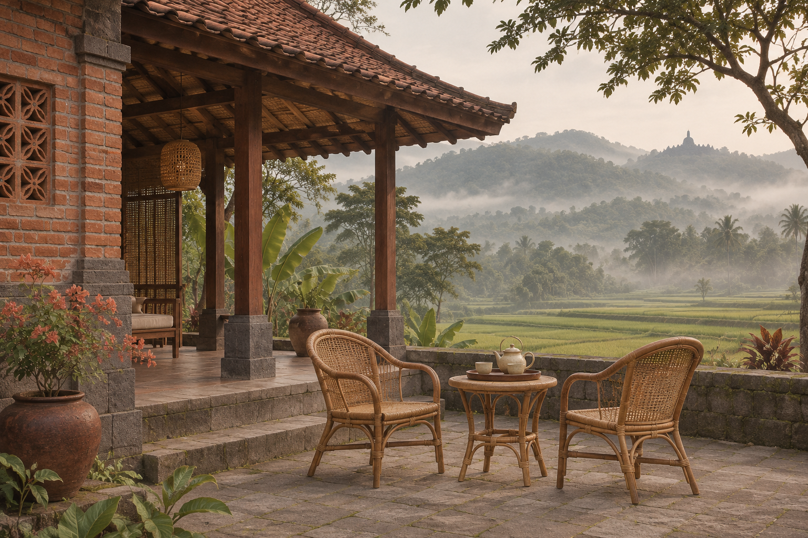
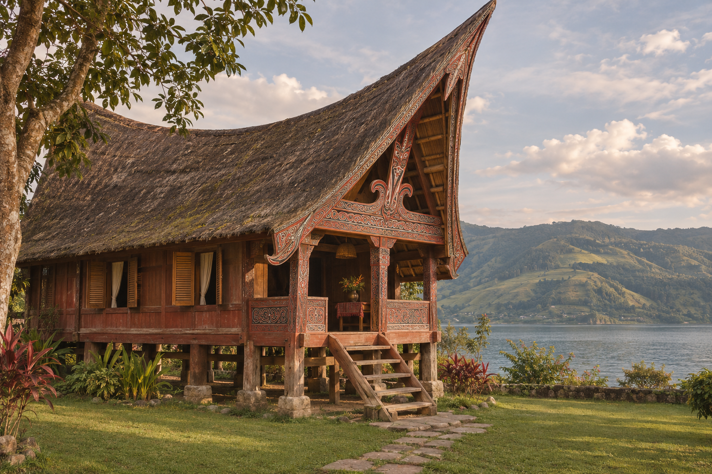
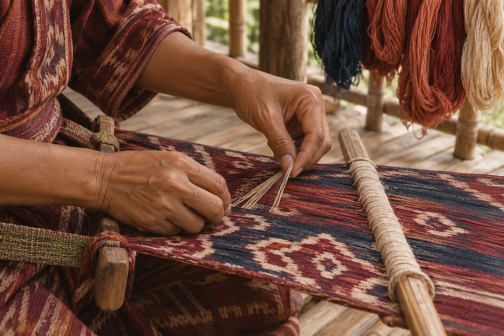
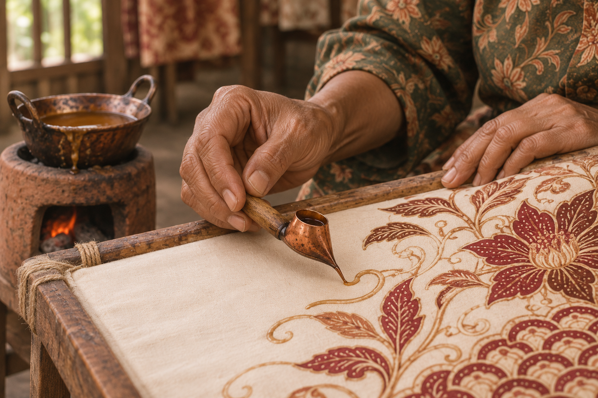

Akar Budaya Travel
Jurnal perjalanan pusaka & singgah bersejarah Nusantara — kurasi rumah warisan, lokakarya kriya, dan ziarah budaya. — Panduan lengkap identitas merek, sistem logo, palet warna WCAG 2.1 AA, tipografi Playfair Display + Source Sans 3, anatomi mesin pencari, dan komponen etalase Ortasys S4.


Posisi Merek & Temuan Riset Desain (Culture & Heritage)
Palet: oxblood #803D32 sebagai tinta aksi (≤10%), parchment #FFFAF2 sebagai kertas, sandstone/clay hanya dekorasi non-teks, moss #52634C untuk status positif/label alam.
Bentuk: radius 2–4px (tombol/field 4), kartu 8px, bingkai foto 2px dengan double rule; tanpa bayangan kecuali popover.
Imagery: dokumenter hangat, manusia hanya dari belakang/kecil/tangan; tidak ada upacara sakral sebagai tontonan.
Master Mark, Varian Latar, Clear Space & Aplikasi Merek
Digunakan pada permukaan terang (#F5EFE5, #FFFAF2) dengan ruang bebas minimal 0,25× tinggi simbol.
Digunakan pada permukaan gelap (#803D32, #642E27) dan bagian footer malam.
Penerapan konsisten pada papan nama, kartu tamu, dan perlengkapan perjalanan.
Token Warna Inti & Derivasi Aksesibilitas
Primary
Primary action, active navigation, key brand anchor
Primary Hover
Hover & pressed state for primary controls
Secondary
Secondary highlights, badges & supporting accents
Tertiary
Warm supporting surfaces & editorial dividers
Accent
Focused emphasis markers & category tags
Background Canvas
Main page canvas & broad section background
Surface
Cards, search console, popovers & modals
Surface Muted
Secondary container contrast & table headers
Text Primary
Headings, body copy & primary data values
Text Muted (Raw)
Metadata, captions & helper descriptions
Border
Hairline card dividers & structural rules
Success
Live price assurance & verified confirmation
Warning
Quota notices & seasonal advisories
Error
Validation alerts & destructive actions
Matriks Verifikasi Kontras WCAG 2.1 AA
Text Primary on Canvas
#302822 on #F5EFE5
Text Primary on Surface
#302822 on #FFFAF2
White on Primary CTA
#FFFFFF on #803D32
Primary on Surface
#803D32 on #FFFAF2
Derived AA Muted on Canvas
#695E53 on #F5EFE5
Derived Field Border on Surface
#8F8579 on #FFFAF2
Playfair Display + Source Sans 3
Aa Bb Cc
Playfair Display
Digunakan untuk judul hero, tajuk seksi, dan nama properti utama.
Aa 0123
Source Sans 3
Rp 2.450.000 · 9–12 Nov 2026 · 2 Dewasa (Tabular Numerals aktif).
Skala Sudut & Kontainer
Pola Tata Letak & Komponen Khas Preset 04
Hero Architecture (Broadsheet Monograph Front-Page):
Framed by double horizontal rules (`border-y-2 border-primary`) with a centered journal masthead (*Jurnal Perjalanan Pusaka Nusantara · Edisi Warisan Hidup*) and a 3-column newspaper front-page layout (Left 3 cols: Editor's Cultural Note & Drop-Cap; Center 6 cols: Archival Framed Photography with caption plate; Right 3 cols: Curated Heritage Index).
Search Engine UI (Archival Registry / Buku Tamu Console):
Styled like a heritage guest registry book on warm parchment (`#FFFAF2`) with double-line borders, numbered archival field labels (`I. Destinasi Pusaka`, `II. Tanggal Singgah`, `III. Rombongan Pejalan`), and a terracotta wax-seal-colored verification button.
Inventory Section Layout (Broadsheet Columnar Exhibition):
Cards sit inside a unified newspaper-column grid divided by vertical sandstone hairlines (`lg:divide-x divide-line`), where each property is presented as an archival plate (`ARSIP 01`, `ARSIP 02`, `ARSIP 03`) with serif headlines, historical context, and live tariff ledger.
Cultural Experiences Layout (2-Column Archival Story Spreads):
Side-by-side documentary spreads with museum-caption metadata and historian guide notes.
Manifesto Section (Centered Pull-Quote & 3-Column Monograph):
Opens with a large serif pull-quote followed by a 3-column vertical-rule essay on cultural ethics.
Aset Visual Khusus Akar Budaya Travel (./assets/*.webp)







Pedoman Implementasi Positif
- ✓ Do use storytelling to explain place, context, and experience.
- ✓ Do prioritize authentic, respectful, agency-approved photography.
- ✓ Do balance editorial content with a visible booking path.
- ✓ Do distinguish verified product details from editorial descriptions.
Batasan Kontrak Produk Ortasys S4
- ✕ Don't use cultural patterns as generic decoration.
- ✕ Don't exoticize local people or communities.
- ✕ Don't imply community benefit, sustainability, local ownership, or special access without evidence.
- ✕ Don't let serif typography compromise form readability.
- ✕ Don't expose supplier net rates, agent margins, or internal B2B information.